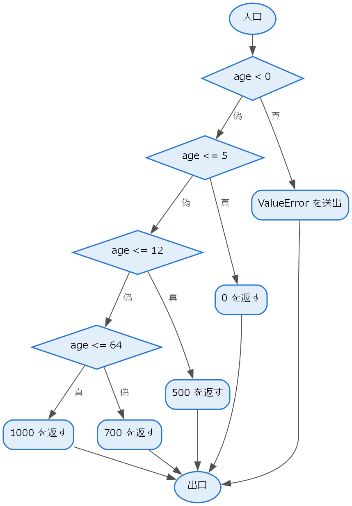

10. ソフトウェア品質とメトリクス
「品質の高いソフトウェア」とは何を意味するのだろうか。不具合が少ないことだけが品質ではない。本章では、ソフトウェアの品質を多面的に捉えるための品質モデルと、品質や規模を数値で測定するためのメトリクスを説明する。
10.1. 品質モデル
ソフトウェアの品質を評価するには、まず品質を構成する特性を明確にする必要がある。国際規格 ISO/IEC 25010 [ISO25010] は、ソフトウェア製品の品質を次の 9 つの品質特性に分類している。なお、2011 年版では 8 つの品質特性であったが、2023 年の改訂で安全性が追加され、いくつかの特性の名称が変更された。
品質特性 |
内容 |
|---|---|
機能適合性 |
明示された要求と暗黙の要求を満たす機能を提供する度合い。 |
性能効率性 |
応答時間や処理能力、使用する資源の量が適切である度合い。 |
互換性 |
他の製品やシステムと情報を交換し、資源を共有しながら機能できる度合い。 |
インタラクション能力 |
利用者が効果的・効率的に操作し、満足して使える度合い（2011 年版の使用性に相当する）。 |
信頼性 |
指定された条件の下で、指定された期間、機能を実行し続けられる度合い。 |
セキュリティ |
情報やデータを保護し、権限に応じたアクセスだけを許す度合い。 |
保守性 |
修正や改良を効果的・効率的に行える度合い。 |
柔軟性 |
異なる環境や変化する要求に適応できる度合い（2011 年版の移植性に相当する）。 |
安全性 |
人の生命や健康、財産、環境を危険にさらさない度合い。 |
品質特性の間には、トレードオフの関係があることが多い。例えば、セキュリティを高めるために認証の手順を増やすと、インタラクション能力が下がることがある。性能効率性を追求した複雑な最適化は、保守性を下げることがある。すべての品質特性を最大にすることはできないため、プロジェクトごとにどの特性を重視するかを決め、非機能要求（第 3 章）として明示する必要がある。
10.2. メトリクスとは
メトリクスとは、ソフトウェアやその開発プロセスの特性を数値で表した尺度である。第 1 章で述べたとおり、ソフトウェアは目に見えないため、メトリクスによって規模や品質、進捗を可視化することが重要である。メトリクスは、見積もり（第 11 章）、品質の評価、問題のある箇所の発見、改善の効果の確認などに用いられる。
10.3. 規模のメトリクス
10.3.1. LOC
最も単純な規模のメトリクスは、ソースコードの行数である LOC（Lines of Code）である。千行単位で表す場合は KLOC と書く。LOC は測定が容易である一方、次の問題がある。
同じ機能でも、プログラミング言語や書き方によって行数が大きく異なる。
空行やコメントを数えるかどうかなど、数え方を統一する必要がある。
実装が終わるまで正確な値が分からないため、開発の初期の見積もりには使いにくい。
10.3.2. ファンクションポイント
ファンクションポイント（FP）は、Albrecht が提案した、ソフトウェアが利用者に提供する機能の量を測定するメトリクスである。外部入力、外部出力、外部照会、内部論理ファイル、外部インターフェースファイルの 5 種類の機能の数を、それぞれの複雑さに応じて重み付けして合計する。FP はプログラミング言語に依存せず、要求や設計の段階で測定できるため、見積もりに用いられる。
10.4. 複雑度のメトリクス
サイクロマティック複雑度は、McCabe が 1976 年に提案した、プログラムの制御の流れの複雑さを表すメトリクスである [McCabe1976]。プログラムの制御の流れを、処理を節点、処理の移り変わりを辺とするグラフ（制御フローグラフ）で表したとき、サイクロマティック複雑度 \(M\) は次の式で求められる。
ここで、\(E\) は辺の数、\(N\) は節点の数、\(P\) は連結成分の数（1 つの関数を対象とする場合は 1）である。1 つの関数の場合、サイクロマティック複雑度は「分岐の数 + 1」に等しくなる。例えば、分岐を持たない関数の複雑度は 1、if 文を 1 つ持つ関数の複雑度は 2 である。
第 7 章の admission_fee 関数の制御フローグラフを図 10.1 に示す。節点の数 \(N\) は 11、辺の数 \(E\) は 14 であるから、サイクロマティック複雑度は \(M = 14 - 11 + 2 \times 1 = 5\) となる。この関数は if 文を 4 つ持つので、「分岐の数 + 1」で求めた値とも一致する。

図 10.1 admission_fee の制御フローグラフ（ひし形は分岐、楕円は入口と出口を表す）
サイクロマティック複雑度は、その関数を通る独立した経路の数を表しており、分岐網羅（第 7 章）を満たすのに必要なテストケースの数の目安にもなる。複雑度が大きい関数は理解やテストが難しく、不具合を含みやすい。McCabe は、1 つのモジュールの複雑度を 10 以下に抑えることを推奨している。
次のプログラムは、Python の ast モジュールを用いて、関数ごとのサイクロマティック複雑度を「分岐の数 + 1」として簡易的に計算するものである。
1"""サイクロマティック複雑度の簡易計算（第 10 章）.
2
3関数ごとに「分岐の数 + 1」を数え、サイクロマティック複雑度の近似値を求める。
4分岐として ``if``・``for``・``while``・``except``・条件式・
5``and`` / ``or`` などを数える。実用には radon などの専用ツールを使うとよい。
6
7実行方法: ``python ch10_cyclomatic.py 対象ファイル.py``
8"""
9
10import ast
11import sys
12from pathlib import Path
13
14BRANCH_NODES = (
15 ast.If,
16 ast.For,
17 ast.AsyncFor,
18 ast.While,
19 ast.ExceptHandler,
20 ast.IfExp,
21 ast.comprehension,
22 ast.Assert,
23 ast.match_case,
24)
25
26
27def complexity(function: ast.FunctionDef | ast.AsyncFunctionDef) -> int:
28 """関数のサイクロマティック複雑度（近似値）を返す."""
29 count = 1
30 for node in ast.walk(function):
31 if isinstance(node, BRANCH_NODES):
32 count += 1
33 elif isinstance(node, ast.BoolOp):
34 # a and b and c は 2 つの分岐として数える
35 count += len(node.values) - 1
36 return count
37
38
39def analyze(source: str) -> list[tuple[str, int]]:
40 """ソースコード中の各関数の名前と複雑度の一覧を返す."""
41 tree = ast.parse(source)
42 return [
43 (node.name, complexity(node))
44 for node in ast.walk(tree)
45 if isinstance(node, (ast.FunctionDef, ast.AsyncFunctionDef))
46 ]
47
48
49def main(argv: list[str]) -> int:
50 """コマンドライン引数で指定したファイルを解析して結果を表示する."""
51 if len(argv) != 2:
52 print("使い方: python ch10_cyclomatic.py 対象ファイル.py")
53 return 1
54 source = Path(argv[1]).read_text(encoding="utf-8")
55 for name, value in analyze(source):
56 print(f"{name}: {value}")
57 return 0
58
59
60if __name__ == "__main__":
61 sys.exit(main(sys.argv))
ダウンロード: ch10_cyclomatic.py
例えば、第 7 章の ch07_boundary.py を対象に実行すると、if 文を 4 つ持つ admission_fee の複雑度は 5 と表示される。
1> python ch10_cyclomatic.py ch07_boundary.py
2admission_fee: 5
なお、第 6 章で紹介した flake8 も、--max-complexity オプションを指定すると、複雑度が指定した値を超える関数を報告する。
10.5. 信頼性のメトリクス
システムの信頼性を表す代表的なメトリクスとして、MTBF、MTTR、可用性がある。
メトリクス |
内容 |
|---|---|
平均故障間隔（Mean Time Between Failures）。故障から復旧した後、次に故障するまでの平均時間。長いほどよい。 |
|
平均修復時間（Mean Time To Repair）。故障してから復旧するまでの平均時間。短いほどよい。 |
|
システムが利用可能である時間の割合。稼働率とも呼ばれる。 |
可用性 \(A\) は、MTBF と MTTR から次の式で求められる。
複数の要素から構成されるシステムの可用性は、要素の接続の仕方によって異なる。可用性 \(A_1, A_2, \ldots, A_n\) の要素を直列に接続した（すべての要素が動作しなければ動作しない）システムの可用性 \(A_s\) と、並列に接続した（いずれか 1 つの要素が動作すれば動作する）システムの可用性 \(A_p\) は、それぞれ次の式で求められる。
次のプログラムは、これらの式に基づいて可用性を計算する。
1"""可用性の計算（第 10 章）.
2
3可用性 A は MTBF（平均故障間隔）と MTTR（平均修復時間）から
4A = MTBF / (MTBF + MTTR) で求める。
5直列構成では各要素の可用性の積、並列構成では
61 - (各要素の不可用率の積) がシステム全体の可用性となる。
7"""
8
9import math
10
11
12def availability(mtbf_hours: float, mttr_hours: float) -> float:
13 """MTBF と MTTR から可用性を返す."""
14 if mtbf_hours <= 0 or mttr_hours < 0:
15 raise ValueError("MTBF は正、MTTR は 0 以上を指定すること")
16 return mtbf_hours / (mtbf_hours + mttr_hours)
17
18
19def series(values: list[float]) -> float:
20 """直列構成（すべてが動作して初めて動作する）の可用性を返す."""
21 return math.prod(values)
22
23
24def parallel(values: list[float]) -> float:
25 """並列構成（どれか 1 つが動作すれば動作する）の可用性を返す."""
26 return 1 - math.prod(1 - a for a in values)
27
28
29def downtime_hours_per_year(value: float) -> float:
30 """可用性から 1 年あたりの停止時間（時間）を返す."""
31 return (1 - value) * 365 * 24
32
33
34if __name__ == "__main__":
35 server = availability(mtbf_hours=1000, mttr_hours=10)
36 print(f"サーバー 1 台: {server:.4f}")
37 print(f"2 台を直列: {series([server, server]):.4f}")
38 print(f"2 台を並列: {parallel([server, server]):.4f}")
39 print(f"1 台の年間停止時間: {downtime_hours_per_year(server):.1f} 時間")
ダウンロード: ch10_availability.py
実行結果を次に示す。MTBF が 1000 時間、MTTR が 10 時間のサーバーの可用性は約 0.9901 であり、1 年間に約 86.7 時間停止する計算になる。このサーバーを 2 台直列に接続すると可用性は約 0.9803 に下がるが、2 台並列に接続して冗長化すると約 0.9999 に上がる。
1サーバー 1 台: 0.9901
22 台を直列: 0.9803
32 台を並列: 0.9999
41 台の年間停止時間: 86.7 時間
可用性の目標は「99.9 %」のように 9 の数で表されることが多い。99.9 % の可用性は、1 年あたり約 8.76 時間の停止に相当する。
10.6. メトリクス活用時の注意点
メトリクスは有用であるが、使い方を誤ると害をもたらす。次の点に注意が必要である。
測定すること自体を目的にしない。何のために測定し、結果をどう使うのかを先に決める。
数値を目標にすると、数値だけが改善される。「ある尺度が目標になると、それはよい尺度ではなくなる」というグッドハートの法則が知られている。例えば、テストのカバレッジを人事評価の目標にすると、何も確認しないテストを大量に書くことでカバレッジだけを高める、といった行動が起こり得る。
個人の評価に使わない。LOC で生産性を評価すると、冗長なコードを書くほど評価が高くなってしまう。
1 つの数値だけで判断しない。複数のメトリクスと、レビューなどの定性的な評価を組み合わせる。
10.7. まとめ
ソフトウェアの品質は、ISO/IEC 25010 の品質特性のように多面的に捉え、重視する特性を非機能要求として明示する。
規模のメトリクスには LOC とファンクションポイントがある。
サイクロマティック複雑度は制御の流れの複雑さを表し、テストのしやすさの目安となる。
信頼性は MTBF、MTTR、可用性で表し、冗長化によって可用性を高められる。
メトリクスは目的を明確にして用い、数値そのものを目標にしない。
10.8. 演習問題
解答例は「第 10 章の解答例」にある。
問題 10-1：次の関数のサイクロマティック複雑度を、ch10_cyclomatic.py と同じ考え方（分岐の数 + 1、and と or も分岐として数える）で求めよ。また、or を分岐として数えない場合の値も求めよ。
1def grade(score: int) -> str:
2 if score < 0 or score > 100:
3 raise ValueError("点数は 0 以上 100 以下を指定すること")
4 if score >= 80:
5 return "A"
6 if score >= 60:
7 return "B"
8 return "C"
問題 10-2：MTBF が 500 時間、MTTR が 5 時間のサーバーがある。このサーバー 1 台の可用性を求めよ。また、同じサーバーを 3 台並列に接続したシステムの可用性を求めよ。
問題 10-3：可用性 99.99 % のシステムは、1 年間（365 日）に最大で何分停止してよいことになるか。
問題 10-4：「1 人あたりのバグ修正件数」を開発者の評価の指標にした場合、どのような問題が起こり得るか。
10.9. 発展課題
演習問題より発展的な課題である。正解が 1 つに定まらないものも含む。解答例や解答の方針は「第 10 章の解答例」にある。
発展課題 10-A：ch10_cyclomatic.py を利用して、指定したフォルダー内のすべての Python ファイルを解析し、サイクロマティック複雑度が上限を超える関数を一覧表示するスクリプトを作成せよ。上限はコマンドライン引数で指定でき、上限を超える関数がある場合は終了コード 1 を返すこと。また、上限の値をどのように決めるべきかを論じよ。